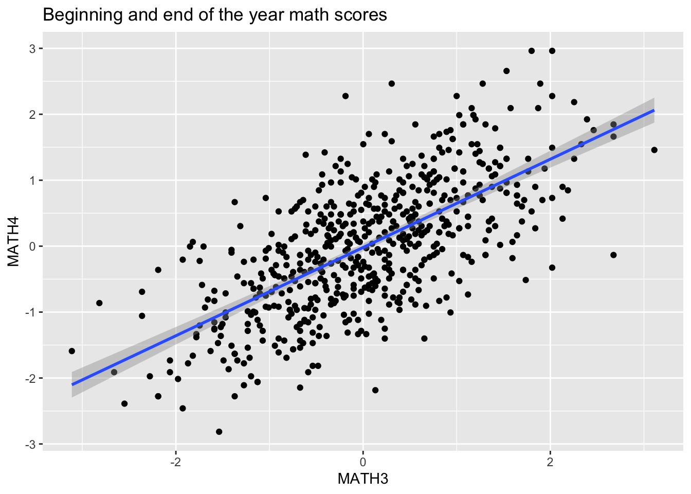
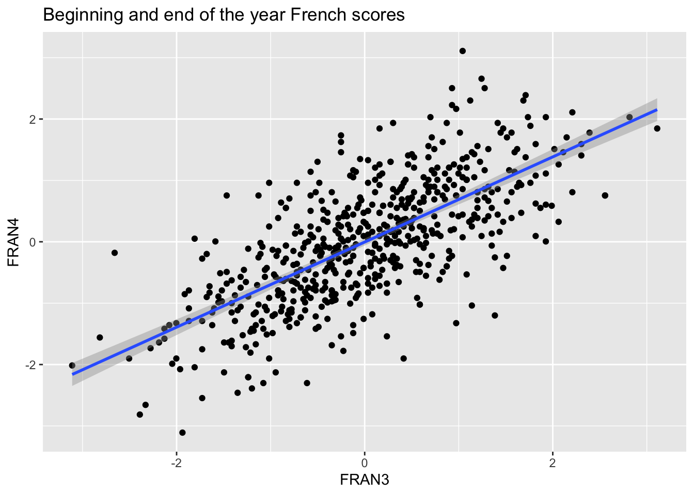
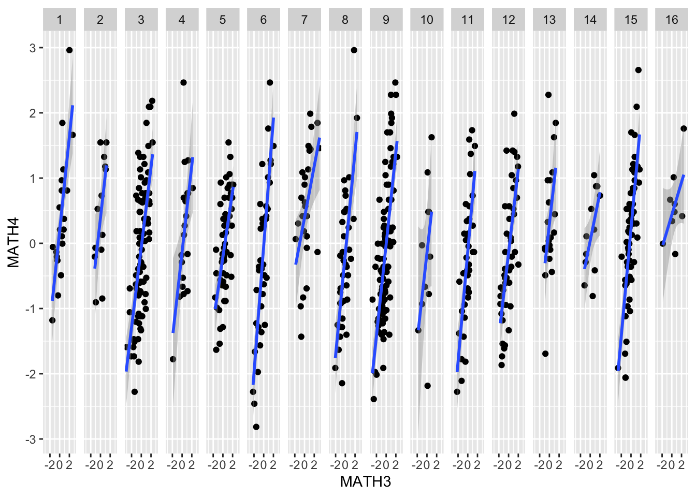
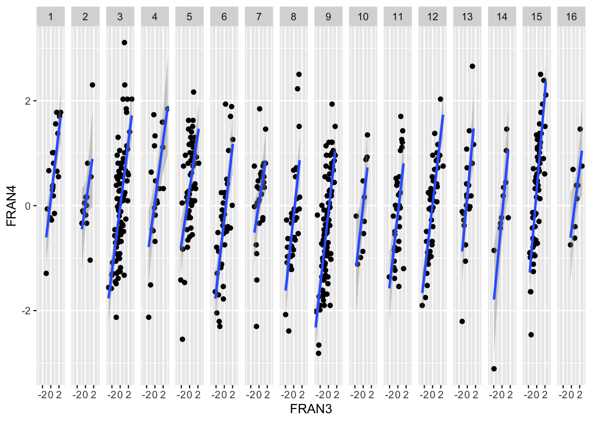

Open RStudio.
Open a new R script in R and save it as
wpa_10_LastFirst.R (where Last and First is your last and
first name).
Careful about: capitalizing, last and first name order, and using
_ instead of -.
At the top of your script, write the following (with appropriate changes):
# Assignment: WPA 10
# Name: Laura Fontanesi
# Date: 17 May 2022Download the Bressoux Data AnPsycho.xls dataset from the
following OSF repository: https://osf.io/q7zph/. Load it into R.
library(tidyverse)
library(readxl)
data = read_excel('data/Bressoux Data AnPsycho.xls')
glimpse(data)## Rows: 609
## Columns: 38
## $ NUMELEVE <dbl> 701, 702, 703, 704, 705, 706, 707, 708, 709, 710, 711, 712, 713, 714, 716, 717, 718, 719, 720, 72…
## $ FRAN4 <dbl> -1.03844718, 0.05081523, -1.32558075, 0.24899764, -1.32558075, 1.14062612, -0.91424034, -0.254804…
## $ CPBIS <dbl> 1, 1, 1, 1, 1, 1, 1, 1, 1, 1, 1, 1, 1, 1, 1, 1, 1, 1, 1, 1, 1, 1, 1, 1, 1, 1, 1, 1, 1, 1, 1, 1, 1…
## $ CE1BIS <dbl> 0, 0, 0, 0, 0, 0, 0, 0, 0, 0, 0, 0, 0, 0, 0, 0, 0, 0, 0, 0, 0, 0, 0, 0, 0, 0, 0, 0, 0, 0, 0, 0, 0…
## $ CE2BIS <dbl> 0, 0, 0, 0, 0, 0, 0, 0, 0, 0, 0, 0, 0, 0, 0, 0, 0, 0, 0, 0, 0, 0, 0, 0, 0, 0, 0, 0, 0, 0, 0, 0, 0…
## $ CM1BIS <dbl> 0, 0, 0, 0, 0, 0, 0, 0, 0, 0, 0, 0, 0, 0, 0, 0, 0, 0, 0, 0, 0, 0, 0, 0, 0, 0, 0, 0, 0, 0, 0, 0, 0…
## $ CM2BIS <dbl> 0, 0, 0, 0, 0, 0, 0, 0, 0, 0, 0, 0, 0, 0, 0, 0, 0, 0, 0, 0, 0, 0, 0, 0, 0, 0, 0, 0, 0, 0, 0, 0, 0…
## $ MATH4 <dbl> -0.84660133, -0.90465749, -0.90465749, 0.06410083, -0.62877082, 0.69927881, -1.20330629, -1.81509…
## $ ECOLE2 <dbl> 2, 2, 3, 3, 3, 3, 3, 3, 3, 3, 3, 3, 3, 3, 3, 3, 4, 4, 4, 4, 4, 4, 4, 4, 5, 5, 5, 5, 5, 5, 5, 5, 5…
## $ CLASSE2 <dbl> 2, 2, 3, 3, 3, 3, 3, 3, 3, 3, 3, 3, 3, 3, 3, 3, 7, 7, 7, 7, 7, 7, 7, 7, 8, 8, 8, 8, 8, 8, 8, 8, 8…
## $ COURS2 <dbl> 1, 1, 1, 1, 1, 1, 1, 1, 1, 1, 1, 1, 1, 1, 1, 1, 1, 1, 1, 1, 1, 1, 1, 1, 1, 1, 1, 1, 1, 1, 1, 1, 1…
## $ RDBLT2 <dbl> 0, 0, 0, 0, 0, 0, 0, 0, 0, 0, 0, 0, 0, 0, 0, 0, 0, 0, 0, 0, 0, 0, 0, 0, 0, 0, 0, 0, 0, 0, 0, 0, 0…
## $ FRAN3 <dbl> 1.13978958, -0.25171360, 0.97295339, 1.13978958, -2.00298384, 1.59399505, -1.01594421, 1.38446085…
## $ MATH3 <dbl> 0.36853256, -0.95115243, 0.67302730, 1.59547256, -1.10303698, 0.84497577, -1.10303698, -0.5383836…
## $ MOIS <dbl> 10, 11, 10, 4, 11, 5, 12, 2, 8, 12, 12, 4, 12, 11, 7, 2, 8, 5, 11, 3, 8, 9, 11, 10, 8, 2, 12, 9, …
## $ ANNEE <dbl> 91, 91, 91, 91, 91, 91, 91, 91, 91, 91, 91, 91, 91, 91, 91, 91, 91, 91, 91, 91, 91, 91, 91, 91, 9…
## $ FRAT <dbl> 3, 2, 2, 1, 2, 2, 2, 2, 3, 1, 2, 3, 2, 2, 2, 3, 1, 1, 2, 3, 1, 1, 1, 4, 1, 1, 1, 2, 2, 3, 1, 1, 1…
## $ PREEL <dbl> 3, 3, NA, NA, NA, NA, NA, NA, NA, NA, NA, NA, NA, NA, NA, NA, 3, 3, 3, 3, 3, 3, 3, 3, 3, 3, 3, 3,…
## $ CSPP <dbl> 6, 4, 1, 7, 4, 4, 6, 2, 2, 3, 5, 4, 3, 5, 6, 6, 3, 4, 2, 4, 2, 6, 3, 4, 5, 4, 3, 4, 3, 5, 4, 6, 5…
## $ CSPM <dbl> 4, 7, 7, 6, 7, 4, 7, 7, 4, 2, 5, 5, 4, 4, 6, 6, 4, 4, 4, 8, 5, 5, 8, 5, 8, 7, 3, 4, 8, 6, 4, 3, 8…
## $ FILLE <dbl> 1, 0, 0, 1, 0, 1, 0, 1, 1, 0, 1, 1, 1, 1, 0, 0, 1, 0, 1, 1, 1, 1, 1, 0, 0, 1, 0, 0, 0, 1, 1, 1, 0…
## $ ANCENS2 <dbl> 21, 21, 25, 25, 25, 25, 25, 25, 25, 25, 25, 25, 25, 25, 25, 25, 28, 28, 28, 28, 28, 28, 28, 28, 1…
## $ NBEL2 <dbl> 15, 15, 25, 25, 25, 25, 25, 25, 25, 25, 25, 25, 25, 25, 25, 25, 22, 22, 22, 22, 22, 22, 22, 22, 2…
## $ NBCOURS2 <dbl> 5, 5, 2, 2, 2, 2, 2, 2, 2, 2, 2, 2, 2, 2, 2, 2, 3, 3, 3, 3, 3, 3, 3, 3, 2, 2, 2, 2, 2, 2, 2, 2, 2…
## $ arti <dbl> 0, 0, 0, 0, 0, 0, 0, 1, 1, 0, 0, 0, 0, 0, 0, 0, 0, 0, 1, 0, 1, 0, 0, 0, 0, 0, 0, 0, 0, 0, 0, 0, 0…
## $ sup <dbl> 0, 0, 0, 0, 0, 0, 0, 0, 0, 1, 0, 0, 1, 0, 0, 0, 1, 0, 0, 0, 0, 0, 1, 0, 0, 0, 1, 0, 1, 0, 0, 0, 0…
## $ inter <dbl> 0, 1, 0, 0, 1, 1, 0, 0, 0, 0, 0, 1, 0, 0, 0, 0, 0, 1, 0, 1, 0, 0, 0, 1, 0, 1, 0, 1, 0, 0, 1, 0, 0…
## $ empl <dbl> 0, 0, 0, 0, 0, 0, 0, 0, 0, 0, 1, 0, 0, 1, 0, 0, 0, 0, 0, 0, 0, 0, 0, 0, 1, 0, 0, 0, 0, 1, 0, 0, 1…
## $ ouvr <dbl> 1, 0, 0, 0, 0, 0, 1, 0, 0, 0, 0, 0, 0, 0, 1, 1, 0, 0, 0, 0, 0, 1, 0, 0, 0, 0, 0, 0, 0, 0, 0, 1, 0…
## $ autr <dbl> 0, 0, 0, 1, 0, 0, 0, 0, 0, 0, 0, 0, 0, 0, 0, 0, 0, 0, 0, 0, 0, 0, 0, 0, 0, 0, 0, 0, 0, 0, 0, 0, 0…
## $ cmult <dbl> 1, 1, 1, 1, 1, 1, 1, 1, 1, 1, 1, 1, 1, 1, 1, 1, 1, 1, 1, 1, 1, 1, 1, 1, 1, 1, 1, 1, 1, 1, 1, 1, 1…
## $ cmultnomb <dbl> 1, 1, 0, 0, 0, 0, 0, 0, 0, 0, 0, 0, 0, 0, 0, 0, 1, 1, 1, 1, 1, 1, 1, 1, 0, 0, 0, 0, 0, 0, 0, 0, 0…
## $ mfran3 <dbl> -0.009005236, -0.009005236, -0.009005236, -0.009005236, -0.009005236, -0.009005236, -0.009005236,…
## $ mmath3 <dbl> 0.04217022, 0.04217022, 0.04217022, 0.04217022, 0.04217022, 0.04217022, 0.04217022, 0.04217022, 0…
## $ msup <dbl> 0.08080808, 0.08080808, 0.08080808, 0.08080808, 0.08080808, 0.08080808, 0.08080808, 0.08080808, 0…
## $ mouvr <dbl> 0.2727273, 0.2727273, 0.2727273, 0.2727273, 0.2727273, 0.2727273, 0.2727273, 0.2727273, 0.2727273…
## $ stdfran3 <dbl> 0.9908583, 0.9908583, 0.9908583, 0.9908583, 0.9908583, 0.9908583, 0.9908583, 0.9908583, 0.9908583…
## $ stdmath3 <dbl> 1.003498, 1.003498, 1.003498, 1.003498, 1.003498, 1.003498, 1.003498, 1.003498, 1.003498, 1.00349…This dataset contains the beginning and end of year score at standardized French and Math tests in 16 different French psrimary schools. It comes with additional demographic and school information.
Let’s say that we are interested in understanding the relationship between the beginning and end of the year scores.
By simply plotting them using scatterplots, we see that there likely is a strong relationship between the 2:
ggplot(data = data, mapping = aes(x = MATH3, y = MATH4)) +
geom_point() +
geom_smooth(method='lm') +
ggtitle("Beginning and end of the year math scores")## `geom_smooth()` using formula 'y ~ x'
ggplot(data = data, mapping = aes(x = FRAN3, y = FRAN4)) +
geom_point() +
geom_smooth(method='lm') +
ggtitle("Beginning and end of the year French scores")## `geom_smooth()` using formula 'y ~ x'## Warning: Removed 7 rows containing non-finite values (stat_smooth).## Warning: Removed 7 rows containing missing values (geom_point).
However, as we mentioned in the lecture on regression models, we are assuming that the residuals in the data are independent and that there is homogeneity of variance. These assumptions are likely violated when we collect data in groups, as in this example. Here, the data were collected across different schools and classes. What tells us that the effect we are looking for is: 1) as strong across all schools (so that it makes sense to have a common slope)? 2) the baseline scores are the same across groups (so that it makes sense to have a common intercept)?
We cannot answer these questions using a simple regression… we need a
model that takes into account that the data are
hierarchical (or nested), which means that they already
have a structure, since they were collected in multiple levels (in this
case, classes and schools), and that they are therefore not all
interchangeable. These models are called, indeed, hierarchical or
multilevel models (https://en.wikipedia.org/wiki/Multilevel_model). The
package in R to fit such models is lme4.
Note: By using the facet_grid function
in ggplot, we can already have an idea of potential
differences in slopes and intercepts across schools, but the more
complex the models and the more levels there are, this might not be
enough.
ggplot(data = data, mapping = aes(x = MATH3, y = MATH4)) +
geom_point() +
geom_smooth(method='lm') +
facet_grid(~ ECOLE2)## `geom_smooth()` using formula 'y ~ x'
ggplot(data = data, mapping = aes(x = FRAN3, y = FRAN4)) +
geom_point() +
geom_smooth(method='lm') +
facet_grid(~ ECOLE2)## `geom_smooth()` using formula 'y ~ x'## Warning: Removed 7 rows containing non-finite values (stat_smooth).## Warning: Removed 7 rows containing missing values (geom_point).
Multilevel models differ according to whether parameter values (slopes and intercept parameters) are fixed or random. Fixed parameters are composed of a constant over all the groups, whereas a random parameter has a different value for each of the groups.
Here an overview also on more complex models: https://rpsychologist.com/r-guide-longitudinal-lme-lmer
library(lme4)
lm(MATH4 ~ MATH3, data = data)##
## Call:
## lm(formula = MATH4 ~ MATH3, data = data)
##
## Coefficients:
## (Intercept) MATH3
## -0.01994 0.66935# Run a random intercept model
randintmodel = lmer(MATH4 ~ MATH3 + (1 | ECOLE2), data = data)
summary(randintmodel)## Linear mixed model fit by REML. t-tests use Satterthwaite's method ['lmerModLmerTest']
## Formula: MATH4 ~ MATH3 + (1 | ECOLE2)
## Data: data
##
## REML criterion at convergence: 1349.2
##
## Scaled residuals:
## Min 1Q Median 3Q Max
## -3.0893 -0.7001 -0.0063 0.6434 3.2304
##
## Random effects:
## Groups Name Variance Std.Dev.
## ECOLE2 (Intercept) 0.02227 0.1492
## Residual 0.51801 0.7197
## Number of obs: 609, groups: ECOLE2, 16
##
## Fixed effects:
## Estimate Std. Error df t value Pr(>|t|)
## (Intercept) -0.001068 0.050220 12.805108 -0.021 0.983
## MATH3 0.669708 0.029810 606.790928 22.466 <2e-16 ***
## ---
## Signif. codes: 0 '***' 0.001 '**' 0.01 '*' 0.05 '.' 0.1 ' ' 1
##
## Correlation of Fixed Effects:
## (Intr)
## MATH3 -0.051The output of lmer consists of three parts: 1. The first part under Formula: and Data: reports a range of summary statistics (AIC, BIC, LogLik,…). 2. The second part under Random effects: summarises the variance and standard deviation of each random effect (including the level 1 model residuals). Underneath the random effects table, the total number of observations is provided along with the number of units (or groups) for each higher level in the model. Here, schools are our only higher level and the output reports that we have 16 different schools. 3. The final part of the output is the Fixed effects: table which reports the parameter estimate (Estimate) standard error (Std. Error) and t-value (t value), for each parameter in the model. For models with more than one fixed part explanatory variable (including the intercept), a correlation table between these variables is also provided underneath the table of parameter estimates.
Note that lme4 does not include p-values see
here for a Discussion on the topic. You can obtain them by
re-running the model after loading the lmerTest
package:
library(lmerTest)
randintmodel = lmer(MATH4 ~ MATH3 + (1 | ECOLE2), data = data)
summary(randintmodel)## Linear mixed model fit by REML. t-tests use Satterthwaite's method ['lmerModLmerTest']
## Formula: MATH4 ~ MATH3 + (1 | ECOLE2)
## Data: data
##
## REML criterion at convergence: 1349.2
##
## Scaled residuals:
## Min 1Q Median 3Q Max
## -3.0893 -0.7001 -0.0063 0.6434 3.2304
##
## Random effects:
## Groups Name Variance Std.Dev.
## ECOLE2 (Intercept) 0.02227 0.1492
## Residual 0.51801 0.7197
## Number of obs: 609, groups: ECOLE2, 16
##
## Fixed effects:
## Estimate Std. Error df t value Pr(>|t|)
## (Intercept) -0.001068 0.050220 12.805108 -0.021 0.983
## MATH3 0.669708 0.029810 606.790928 22.466 <2e-16 ***
## ---
## Signif. codes: 0 '***' 0.001 '**' 0.01 '*' 0.05 '.' 0.1 ' ' 1
##
## Correlation of Fixed Effects:
## (Intr)
## MATH3 -0.051lm(MATH4 ~ 0 + MATH3, data = data)##
## Call:
## lm(formula = MATH4 ~ 0 + MATH3, data = data)
##
## Coefficients:
## MATH3
## 0.6685# Run a random slope model
randslopemodel = lmer(MATH4 ~ MATH3 + (0 + MATH3 | ECOLE2), data = data)
summary(randslopemodel)## Linear mixed model fit by REML. t-tests use Satterthwaite's method ['lmerModLmerTest']
## Formula: MATH4 ~ MATH3 + (0 + MATH3 | ECOLE2)
## Data: data
##
## REML criterion at convergence: 1353.1
##
## Scaled residuals:
## Min 1Q Median 3Q Max
## -3.1289 -0.7110 -0.0147 0.6796 3.3283
##
## Random effects:
## Groups Name Variance Std.Dev.
## ECOLE2 MATH3 0.01452 0.1205
## Residual 0.52448 0.7242
## Number of obs: 609, groups: ECOLE2, 16
##
## Fixed effects:
## Estimate Std. Error df t value Pr(>|t|)
## (Intercept) -0.006598 0.029762 606.921285 -0.222 0.825
## MATH3 0.670032 0.045316 12.257041 14.786 3.51e-09 ***
## ---
## Signif. codes: 0 '***' 0.001 '**' 0.01 '*' 0.05 '.' 0.1 ' ' 1
##
## Correlation of Fixed Effects:
## (Intr)
## MATH3 -0.049# Run a random intercept & slope model
randintslopemodel = lmer(MATH4 ~ MATH3 + (MATH3 | ECOLE2), data = data)
summary(randintslopemodel)## Linear mixed model fit by REML. t-tests use Satterthwaite's method ['lmerModLmerTest']
## Formula: MATH4 ~ MATH3 + (MATH3 | ECOLE2)
## Data: data
##
## REML criterion at convergence: 1345.6
##
## Scaled residuals:
## Min 1Q Median 3Q Max
## -3.1355 -0.6860 0.0164 0.6357 3.2543
##
## Random effects:
## Groups Name Variance Std.Dev. Corr
## ECOLE2 (Intercept) 0.02349 0.1533
## MATH3 0.01424 0.1193 -0.21
## Residual 0.50693 0.7120
## Number of obs: 609, groups: ECOLE2, 16
##
## Fixed effects:
## Estimate Std. Error df t value Pr(>|t|)
## (Intercept) 0.01591 0.05123 11.30929 0.311 0.762
## MATH3 0.66203 0.04521 11.06723 14.643 1.37e-08 ***
## ---
## Signif. codes: 0 '***' 0.001 '**' 0.01 '*' 0.05 '.' 0.1 ' ' 1
##
## Correlation of Fixed Effects:
## (Intr)
## MATH3 -0.172Create a new variable in the dataset, called
improvement_math, which is the difference between
MATH4 and MATH3; and
improvement_french which is the difference between
FRAN4 and FRAN3.
Run a multilevel model (separately for math and french), in which the improvement in math and french is predicted by at least 2 variables of your choice in the dataset, and that takes into account the school level. Run a random slope model, a random intercept model, and a random slope and intercept model.
(extra) Collapse the data across classrooms. Can you look at the effect of the number of student per classrrom on the improvements of math and french, taking into account the school level as well?